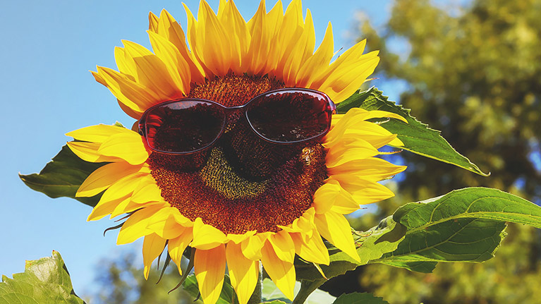

Det absolut tråkigaste jag gjort i sommar var att klippa gräs.
men jag har också gjort en rolig grej och det var att hänga med min kompis
Jag har badat 3? gånger och det kändes kallt
Det godaste jag åt i somras var Pizza
och jag skulle vilja jämföra smaken med pizza.
En tv-serie(manga, jag kollar inte så mycket på tv) som jag
upptäckte i somras var Mashle
och den skulle jag vilja rekommendera till alla dumma weebs
En person som jag träffade i somras var Julian
och jag skulle vilja citera hen genom att säga _________________
Vid ett tillfälle i somras åkte jag till fjällen
där var det både jobbigt och tråkigt
Jag skulle vilja sammanfatta min sommar med tre ord, tagit det lungt.
En helt okej sommar men nog har jag allt längtat efter att jag ska
få börja skolan igen och jag tror att detta år på NTI kommer
att bli roligt.
